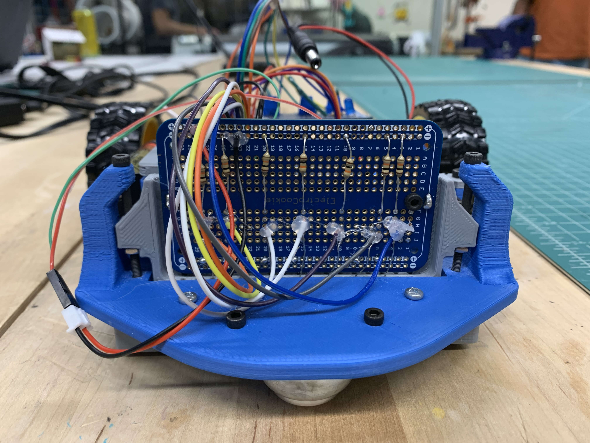

The photoresistors need to be calibrated so that the robot can "understand", when it is over a white surface or a black surface. Remapping the values of the photoresistors assigns an absolute value for a white surface and a black surface. Therefore, when a photoresistor is placed over a white surface it's reading would be 0 and when it is placed over a black surface it's reading would be 100. This allows the robot to "fully understand" when it is over a black line. Thus, calibration is the most crucial step of getting the robot to follow a line.
